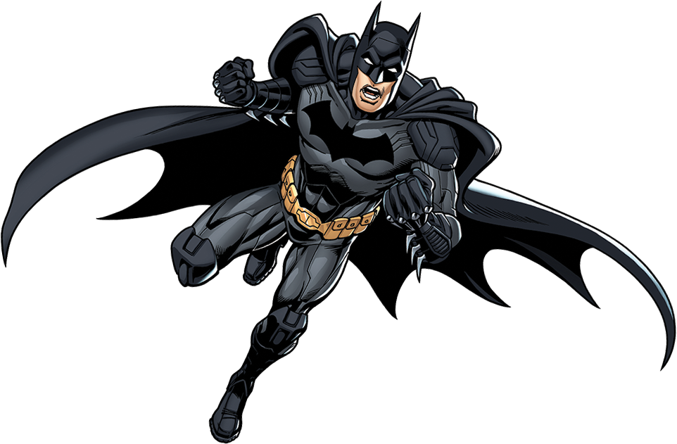
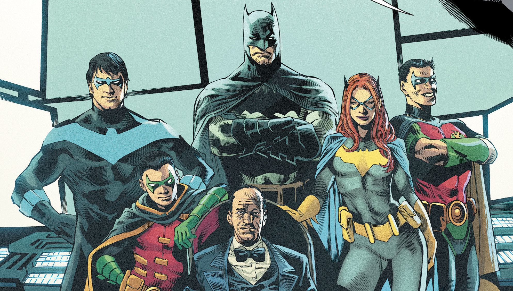

About Batman
In the night, playboy billionaire Bruce Wayne puts on his cowl and operates as Batman. Unlike most heroes, he doesn't have any superhuman powers or abilities. However, he is still an amazing hero. After witnessing the murder of his parents at the age of 14, he trained both physically and intellectually to fight crime. He resides and protects Gotham City from various supervillians.
Batman Characteristics
- Master martial artist
- Genius-level intellect
- Refrains from killing his enemies
- Dark, brooding and suspicious of people
- Peak human strength, durability, speed,stamina and senses
Batman's Teammates
A photo of Batman and the Bat family
Over the years, Batman has expanded his team. There are several members within the Bat family. Check out the most popular ones here: